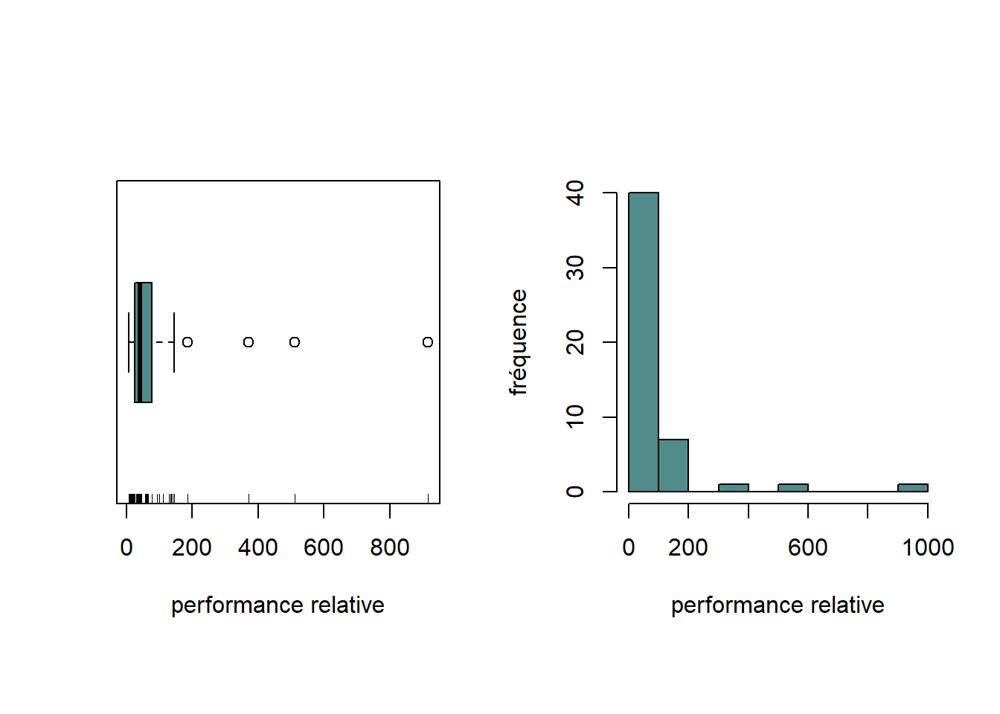
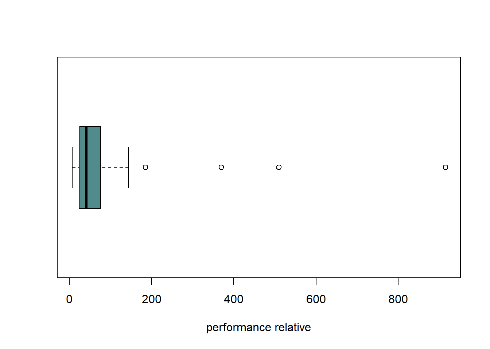
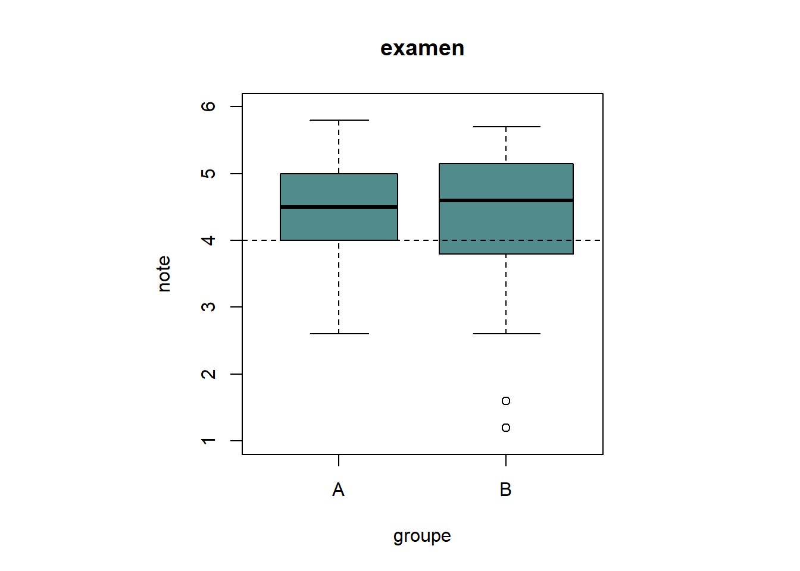
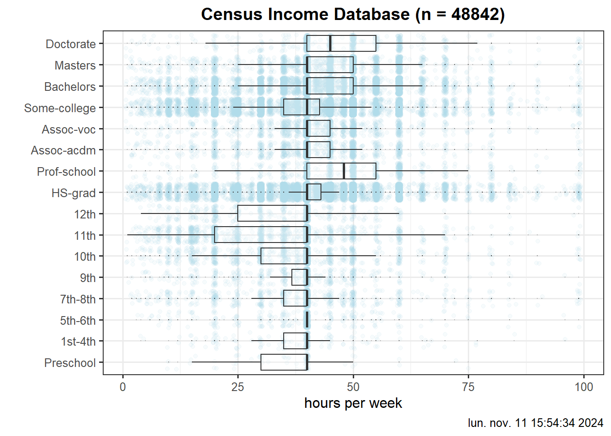
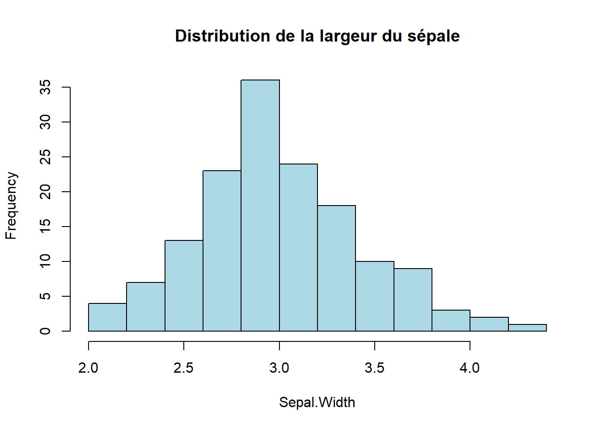
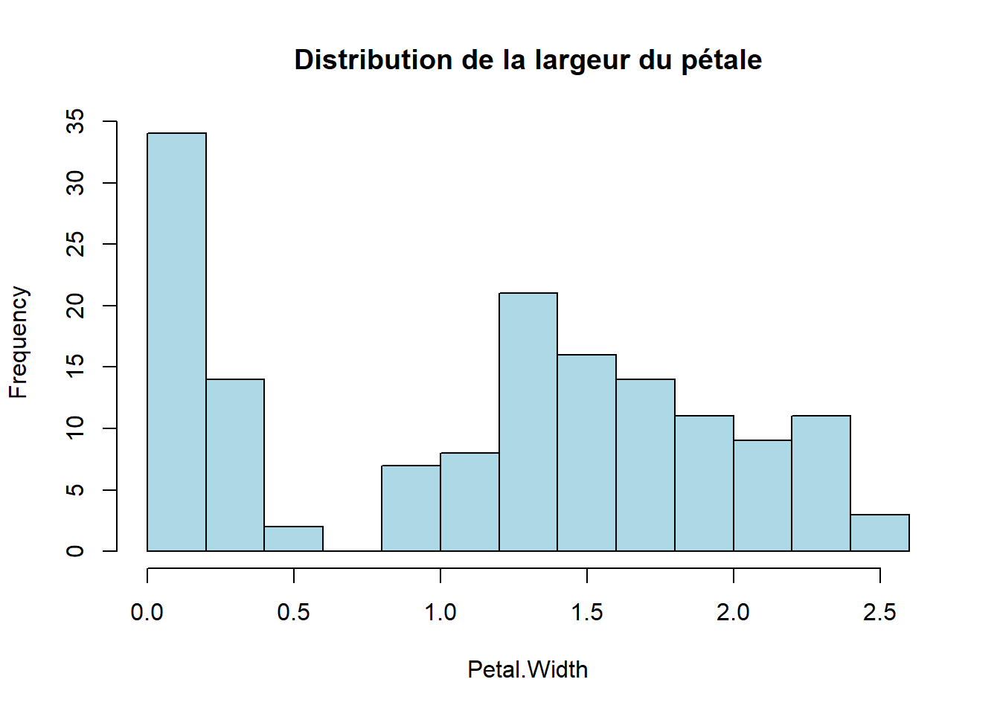
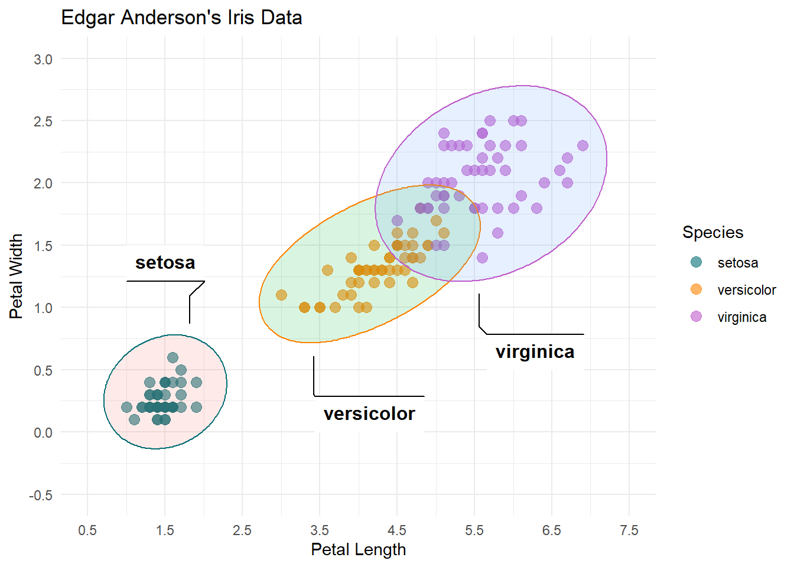
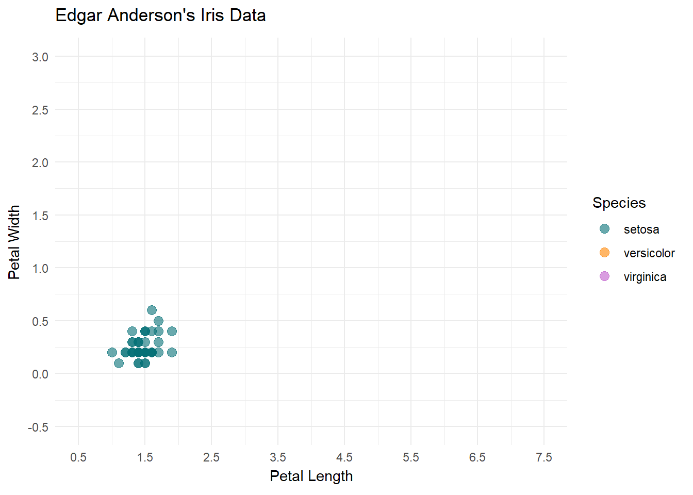
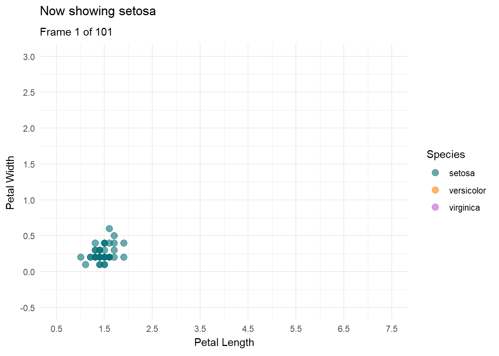

cpus <- scan("Data/cpus.txt")Rapport
TP 1
Introduction
L’objectif de ce travail pratique consiste à se familiariser avec les commandes de base du logiciel R, à utiliser les techniques d’analyse pour une variable statistique puis deux et finalement à apprendre à rédiger des rapports d’analyse de données.
Exercice 1
b) Charger les données dans R en utilisant les fonctions scan() et read.table().
cpus.txt
examen.txt
examen <- read.table("Data/examen.txt",TRUE)c) Pour voir le contenu de l’objet cpus
cpus [1] 62 130 11 12 144 16 133 26 32 7 24 19 24 66 915 92 10 45 12
[20] 58 33 38 38 25 110 40 370 185 22 18 136 44 36 76 66 56 141 64
[39] 36 510 30 100 14 60 46 65 36 21 66 24d) Pour accéder à la 19ème composante du vecteur cpus
cpus[19][1] 12e) Pour obtenir une partie du vecteur cpus comme par exemple les éléments du vecteur compris entre la 5ème et la 21ème composante
cpus[5:21] [1] 144 16 133 26 32 7 24 19 24 66 915 92 10 45 12 58 33f) Pour extraire du vecteur cpus ses éléments supérieurs à 200
cpus[cpus > 200][1] 915 370 510g) Il est possible d’accéder directement aux composantes d’une table par le nom. Par exemple, si on veut afficher la composante note de l’objet examen
examen$note [1] 3.5 5.4 5.0 3.2 3.7 2.6 4.6 4.2 4.9 5.2 4.2 4.0 5.5 5.8 5.3 5.2 4.3 4.4 5.1
[20] 4.5 5.0 4.0 3.8 4.9 4.6 4.0 4.6 3.0 4.5 5.0 4.2 4.0 3.7 5.3 3.3 NA 4.0 4.9
[39] 4.9 3.7 4.9 5.4 5.1 1.2 1.6 5.1 4.8 5.5 3.6 4.1 5.6 5.3 3.2 5.3 4.8 3.4 5.7
[58] 5.6 4.3 4.9 4.5 3.3 4.0 4.0 5.6 3.6 5.2 4.6 4.6 2.6 3.9 4.1 4.0 5.2 5.0 4.7
[77] 3.7h) On peut aussi accéder en profondeur aux composantes
examen$note[9][1] 4.9i) La méthode la plus simple pour créer un vecteur consiste à énumérer ses éléments à l’aide de la fonction c()
mesdonnees <- c(2.9, 3.4, 3.4, 3.7, 3.7, 2.8, 2.1, 2.5, 2.6, 1.5)couleurs <- c("bleu", "vert", "blanc", "noir", "jaune")j) On peut ôter des composantes d’un vecteur en indiquant entre crochets les indices précédés du signe négatif
mesdonnees[-c(5:9)][1] 2.9 3.4 3.4 3.7 1.5k) Finalement, le contenu de votre environnement de travail est affiché
ls()[1] "couleurs" "cpus" "examen" "mesdonnees"Exercice 2
a) Construire un diagramme branche-et-feuilles, une boîte à moustaches et un histogramme des données observées à l’aide des commandes ci-dessous.
stem(cpus)
The decimal point is 2 digit(s) to the right of the |
0 | 111111222222223333344444445566666777789
1 | 01334449
2 |
3 | 7
4 |
5 | 1
6 |
7 |
8 |
9 | 2par(mfrow=c(1,2), pty="s")
boxplot(cpus, xlab="performance relative", col="darkslategray4", horizontal=T)
rug(cpus)
hist(cpus, xlab="performance relative", ylab="fréquence", main="",
col="darkslategray4")
par(mfrow=c(1,1))- Quels sont les effets de cette commande?
boxplot(cpus, xlab="performance relative", col="darkslategray4", horizontal=T)
Cette commande à pour effet de générer un boxplot horizontal des données avec comme légende de l’axe x performance relative et avec la couleur du graphique en gris.
- Quel est l’effet de la fonction
rug()?
Cette commande ajoute des graduations à l’axe horizontal pour représenter la densité des valeurs (diagramme en aiguilles).
b) Commenter la distribution des valeurs observées en se basant sur les graphiques de la Figure 5 : valeur(s) atypique(s), asymétrie
Comme on peut le voir dans les deux graphiques, la majorité des valeurs se trouvent au début de l’échelle donnée (~0-100). Ceci nous amène à dire qu’il y a une asymétrie positive et qu’il y a des valeurs atypiques entre environ 200 et 900.
c) Calculer la performance relative médiane et la performance relative moyenne des valeurs observées en utilisant les fonctions de R adéquates. Est-il plus approprié d’utiliser la médiane ou la moyenne ?
median(cpus)[1] 42mean(cpus)[1] 86.88En sachant que la grande majorité des valeurs se trouvent entre 0 et 100, la moyenne et la médiane sont assez écarté. Ceci vient très problement des valeurs atypiques qui tire beaucoup la moyenne vers le haut. Dans ce cas il est plus logique d’utiliser la médiane car elle est moins affectée par les quelques valeurs atypiques très grandes.
d) Déterminer le(s) mode(s) des valeurs observées à l’aide des commandes suivantes :
n.cpus <- table(cpus)
as.numeric(names(n.cpus)[n.cpus==max(n.cpus)])[1] 24 36 66e) Que fait la commande suivante ?
summary(cpus) Min. 1st Qu. Median Mean 3rd Qu. Max.
7.00 24.00 42.00 86.88 73.50 915.00 La fonction nous rend une vision globale de l’objet, dans ce cas cpus.txt. Il nous donne les informations:
- Valeur minimum
- Premier Quartile (25% des données sont plus petites que cette valeur)
- Médiane
- Moyenne
- Troisième Quartile (25% des données sont plus grande que cette valeur)
- Valeur maximum
f) Décrire l’effet sur la moyenne et sur la médiane des trois interventions suivantes :
- Ajouter un processeur de performance relative 43
cpus<-c(cpus,43)
summary(cpus) Min. 1st Qu. Median Mean 3rd Qu. Max.
7.00 24.00 43.00 86.02 71.00 915.00 La médiane augmente puisque la valeur ajoutée est plus grande que la médiane précédente.
A l’inverse, la moyenne descend puisque la valeur ajoutée est plus petite.
- Soustraire 9 à chaque valeur observée
cpus<- cpus - 9
summary(cpus) Min. 1st Qu. Median Mean 3rd Qu. Max.
-2.00 15.00 34.00 77.02 62.00 906.00 On voit que soustraire 9 à chaque valeur à eu comme effet de soustraire exactement 9 à toutes les valeurs calculées (médiane, moyenne, …).
- Diviser chaque observation par 3.
J’ai ajouté à nouveau les 9 à chaque valeur avant de faire ça pour éviter d’avoir des calculs particulier au niveau des valeurs négatives.
cpus<- cpus + 9
cpus<- cpus / 3
summary(cpus) Min. 1st Qu. Median Mean 3rd Qu. Max.
2.333 8.000 14.333 28.673 23.667 305.000 On remarque que diviser toutes les valeurs par une constane (dans ce cas 3), divise également la médiane et la moyenne par la même constante.
g) Calculer l’écart-type des performances relatives une fois avec les valeurs atypiques et une fois sans en utilisant la fonction sd(). Les valeurs atypiques peuvent être déterminées à l’aide de la fonction boxplot() avec plot=FALSE comme argument. Que constate-t-on ? L’écart-type est-il un indicateur robuste ?
ecartTypeAvec<-sd(cpus)
print(ecartTypeAvec)[1] 49.02201valeursAtypiques<-boxplot(cpus,plot = FALSE)$out
print(valeursAtypiques)[1] 48.00000 305.00000 123.33333 61.66667 170.00000ecartTypeSans <- sd(cpus[!cpus %in% valeursAtypiques])
print(ecartTypeSans)[1] 11.99519L’écart-type calculé avec les valeurs atypique et largement plus grand que sans. Ceci est normal mais montre qu’il faut faire attention lors de l’utilisation de celui-ci. C’est donc un indicateur non robuste car il est fortement influencé par les valeurs extrêmes.
Exercice 3
a) Tracer les boîtes à moustaches en parallèle en utilisant les commandes suivantes :
lblue<-"#528B8B"
par(pty="s")
boxplot(note~groupe, data=examen, ylim=c(1,6), xlab="groupe", varwidth=T, col=lblue, main="examen")
abline(h=4, lty=2)
b) Rajouter les bâtonnets des notes des étudiants des deux classes, sur le côté gauche des boîtes à moustaches pour la classe A (side=2 comme argument de la fonction rug()) et sur le côté droite pour la classe B (side=4 comme argument de la fonction rug()).
par(pty="s")
boxplot(note~groupe, data=examen, ylim=c(1,6), xlab="groupe", varwidth=T, col=lblue, main="examen")
abline(h=4, lty=2)
note.A<-split(examen$note, examen$groupe)$A
note.B<-split(examen$note, examen$groupe)$B
rug(note.A, side=2)
rug(note.B, side=4)c) En se basant sur la Figure 2, existe-t-il une différence significative entre les deux groupes à l’examen de fin d’unité ?
Pas particulièrement, les différences sont les suivantes:
- Le groupe B à deux personnes ayant fait une note hors norme (1-2).
- Le groupe B à une dispersion légèrement plus grande mais généralement c’est similaire au groupe A.
- La médiane du groupe B est légèrement plus élevée.
- Le groupe A n’a que 25% en dessous du 4, le groupe B en a plus.
d) Observe-t-on sur les boîtes à moustaches une différence entre les dispersions des deux groupes ?
Oui, comme cité à la question précédente le groupe B est légèrement plus dispersé.
e) Calculer les écarts-types des deux groupes à l’aide des fonctions by() et sd().
ecartsTypes <- by(examen$note, examen$groupe, sd)
print(ecartsTypes)examen$groupe: A
[1] 0.7503156
------------------------------------------------------------
examen$groupe: B
[1] NAecartsTypes <- by(examen$note, examen$groupe, function(x) sd(x, na.rm = TRUE))
print(ecartsTypes)examen$groupe: A
[1] 0.7503156
------------------------------------------------------------
examen$groupe: B
[1] 1.026574Comme on le voit à la première tentative, le groupe B possède des valeurs nulles et donc il faut les enlever pour calculer l’écart-type.
f) Que peut-on déduire en comparant les conclusions établies en c., d. et e. ?
Qu’en effet le groupe B à un plus grand écart entre les résultats des étudiants. Par contre puisque la médiane est plus élevée que le groupe A, ceci montre qu’il y a probablement des différences plus significatives entre les élèves.
À votre avis, entre les boîtes à moustaches en parallèle et le graphique tracé ci-dessus, lequel est le plus approprié ?
Le graphique semble plus adapté car même s’il ne montre pas autant clairement les pourcentiles, il démontre plus de granularité.
Nous pouvons par exemple voir que dans les deux groupes il y a un creux dans la grande masse de valeurs, c’est donc une répartition bimodale pour les deux.
Le graphique donne une meilleure vision globale du niveau des étudiants.
Exercice 4
a)
library(ggplot2)
library(arules)Le chargement a nécessité le package : Matrix
Attachement du package : 'arules'Les objets suivants sont masqués depuis 'package:base':
abbreviate, writedata("AdultUCI")dframe<-AdultUCI[, c("education", "hours-per-week")]
colnames(dframe)<-c("education", "hours_per_week")
str(dframe)'data.frame': 48842 obs. of 2 variables:
$ education : Ord.factor w/ 16 levels "Preschool"<"1st-4th"<..: 14 14 9 7 14 15 5 9 15 14 ...
$ hours_per_week: int 40 13 40 40 40 40 16 45 50 40 ...- Pourquoi ce changement de nom de variable ?
Car R peu comprendre les “-” comme des soustractions, il est donc plus sage de mettre des “_” dans les nom de variables. Il est aussi plus commun d’utiliser les “_” pour représenter des espaces en programmation.
Tracer les boîtes à moustaches en parallèle de la Figure 8 dans lesquelles est représenté le temps hebdomadaire consacré au travail par les Américains recensés selon leur formation.
n=dim(na.omit(dframe))[1]
today<-format(Sys.time(), "%a %b %d %X %Y")
ggplot(dframe, aes(x=hours_per_week, y=education)) +
geom_point(colour="lightblue", alpha=0.1, position="jitter") +
geom_boxplot(outlier.size=0, alpha=0.2) +
theme_bw(base_size=12) +
theme(
legend.position="none",
plot.title=element_text(hjust=0.5, face="bold")) +
labs(
color="",
fill="",
x="hours per week",
y="",
title=paste("Census Income Database (n = ",n,")", sep=""),
caption = today
)
Commenter le graphique obtenu.
Le graphique semble séparé en deux parties, tous les niveaux d’études sauf Doctorate et Prof-school ont une médiane à 40h par semaine.
La séparation mentionné est représenté par le fait que les niveaux de Preschool jusqu’à 12th ont le 3ème quartile à 40h et les autres (sauf Some-college) ont leur 1er quartile à la même valeur.
Il peut donc en être déduit que la majorité des personnes n’ayant pas obtenu un diplome de high-shool ou plus travaillent 40h ou moins par semaine. L’inverse et donc aussi vrai.
b) Calculer la proportion d’observations contenant des valeurs manquantes en utilisant les commandes ci-dessous.
dim(AdultUCI)[1] 48842 15nrows<-nrow(AdultUCI)
n.missing<-rowSums(is.na(AdultUCI))
sum(n.missing>0)/nrows[1] 0.3824577c) En se basant sur les boîtes à moustaches en parallèle de la Figure 8, pour quel type de formation observe-t-on la plus grande dispersion du temps de travail ? Existe-t-il une différence entre les médianes des types de formation ? En donner brièvement la raison.
Le type de formation présentant la plus grande dispersion semble être 11th.
En ce qui concerne les médianes, seulement Doctorate et Prof-school sont différentes et supérieurs à 40h par semaine.
Ceux-ci sont des types de travail qui sont reconnus pour être difficile mais aussi très occupant en terme de temps de travail.
d) Pour chaque type de formation, on peut déterminer puis afficher à l’écran le temps maximal de travail hebdomadaire à l’aide des commandes
nx<-by(dframe$hours_per_week, dframe$education, max, na.rm=T)
nxdframe$education: Preschool
[1] 75
------------------------------------------------------------
dframe$education: 1st-4th
[1] 96
------------------------------------------------------------
dframe$education: 5th-6th
[1] 99
------------------------------------------------------------
dframe$education: 7th-8th
[1] 99
------------------------------------------------------------
dframe$education: 9th
[1] 99
------------------------------------------------------------
dframe$education: 10th
[1] 99
------------------------------------------------------------
dframe$education: 11th
[1] 99
------------------------------------------------------------
dframe$education: 12th
[1] 99
------------------------------------------------------------
dframe$education: HS-grad
[1] 99
------------------------------------------------------------
dframe$education: Prof-school
[1] 99
------------------------------------------------------------
dframe$education: Assoc-acdm
[1] 99
------------------------------------------------------------
dframe$education: Assoc-voc
[1] 99
------------------------------------------------------------
dframe$education: Some-college
[1] 99
------------------------------------------------------------
dframe$education: Bachelors
[1] 99
------------------------------------------------------------
dframe$education: Masters
[1] 99
------------------------------------------------------------
dframe$education: Doctorate
[1] 99La formation pour laquelle un temps maximal a été observé se détermine par les commandes suivantes, est-ce surprenant?
max(nx)[1] 99names(nx)[nx==max(nx)] [1] "5th-6th" "7th-8th" "9th" "10th" "11th"
[6] "12th" "HS-grad" "Prof-school" "Assoc-acdm" "Assoc-voc"
[11] "Some-college" "Bachelors" "Masters" "Doctorate" Non ce n’est pas particulièrement surprenant car dans tout domaine il y a une ou plusieurs personnes qui travail un nombre d’heures aberrant.
Ce qui est plus surprenant c’est qu’il y aie une formation avec autant de différence, c’est à dire Preschool avec “seulement” 75h par semaine.
e) En s’inspirant des commandes utilisées ci-dessus, déterminer la formation pour laquelle la distribution des temps de travail se caractérise par le plus petit écart-type.
MinSd<-by(dframe$hours_per_week, dframe$education, sd, na.rm=T)
MinSddframe$education: Preschool
[1] 11.434
------------------------------------------------------------
dframe$education: 1st-4th
[1] 12.22667
------------------------------------------------------------
dframe$education: 5th-6th
[1] 11.37219
------------------------------------------------------------
dframe$education: 7th-8th
[1] 14.56277
------------------------------------------------------------
dframe$education: 9th
[1] 11.46478
------------------------------------------------------------
dframe$education: 10th
[1] 13.91801
------------------------------------------------------------
dframe$education: 11th
[1] 13.9968
------------------------------------------------------------
dframe$education: 12th
[1] 12.62027
------------------------------------------------------------
dframe$education: HS-grad
[1] 11.42384
------------------------------------------------------------
dframe$education: Prof-school
[1] 14.98344
------------------------------------------------------------
dframe$education: Assoc-acdm
[1] 12.1991
------------------------------------------------------------
dframe$education: Assoc-voc
[1] 10.94331
------------------------------------------------------------
dframe$education: Some-college
[1] 12.79618
------------------------------------------------------------
dframe$education: Bachelors
[1] 11.42306
------------------------------------------------------------
dframe$education: Masters
[1] 12.14094
------------------------------------------------------------
dframe$education: Doctorate
[1] 14.9196min(MinSd)[1] 10.94331names(MinSd)[MinSd==min(MinSd)][1] "Assoc-voc"C’est donc la formation Assoc-voc qui a le plus petit écart-type avec 10.94331.
f) Observe-t-on un résultat similaire en utilisant l’étendue interquartiles à l’aide de la fonction IQR()?
MinIqr<-by(dframe$hours_per_week, dframe$education, IQR, na.rm=T)
MinIqrdframe$education: Preschool
[1] 10
------------------------------------------------------------
dframe$education: 1st-4th
[1] 5
------------------------------------------------------------
dframe$education: 5th-6th
[1] 0
------------------------------------------------------------
dframe$education: 7th-8th
[1] 5
------------------------------------------------------------
dframe$education: 9th
[1] 3.25
------------------------------------------------------------
dframe$education: 10th
[1] 10
------------------------------------------------------------
dframe$education: 11th
[1] 20
------------------------------------------------------------
dframe$education: 12th
[1] 15
------------------------------------------------------------
dframe$education: HS-grad
[1] 3
------------------------------------------------------------
dframe$education: Prof-school
[1] 15
------------------------------------------------------------
dframe$education: Assoc-acdm
[1] 5
------------------------------------------------------------
dframe$education: Assoc-voc
[1] 5
------------------------------------------------------------
dframe$education: Some-college
[1] 7.75
------------------------------------------------------------
dframe$education: Bachelors
[1] 10
------------------------------------------------------------
dframe$education: Masters
[1] 10
------------------------------------------------------------
dframe$education: Doctorate
[1] 15min(MinIqr)[1] 0names(MinIqr[MinIqr==min(MinIqr)])[1] "5th-6th"Le résultat est maintenant différent car l’étendue interquartiles minimum est de 0 pour le type 5th-6th.
Exercice 5
Estimer et justifier les valeurs des coefficients de corrélation des séries de données à l’aide de leurs graphiques de nuage de points tracés dans la Figure 10, la Figure 11, la Figure 12 et la Figure 13.
Figure 10
Le coefficient de corrélation se trouve probablement entre 0.9 et 1. Il y a une forte corrélation car il n’y a pas de valeurs particulièrement extrêmes.
Figure 11
Cette fois le coefficient tend vers 0 car aucune corrélation n’est visible, les valeurs sont presque uniformément réparti sur toute l’espace de définition.
Figure 12
Le coefficient de corrélation n’est pas linéaire car les points se trouvent sur une forme hyperbolique
Figure 13
Cette figure représente presque une image miroir de la figure 10, son coefficient aura donc le même ordre de grandeur 0.9 à 1 mais cette fois il sera négatif. Ca donne donc une valeur probable entre -1 et -0.9 car plus x augmente, plus y diminue.
Exercice 6
a) Utiliser les librairies skimr et summarytools pour afficher les sorties qui permettent d’effectuer une analyse exploratoire des données observées. Pour la librairie skimr appliquer la fonction tbl_summary() à l’objet iris; appliquer la fonction skim() à l’objet iris pour la librairie skimr.
library(summarytools)
library(skimr)
library(gtsummary)tbl_summary fait partie du package gtsummary.
tbl_summary(iris)| Characteristic | N = 1501 |
|---|---|
| Sepal.Length | 5.80 (5.10, 6.40) |
| Sepal.Width | 3.00 (2.80, 3.30) |
| Petal.Length | 4.35 (1.60, 5.10) |
| Petal.Width | 1.30 (0.30, 1.80) |
| Species | |
| setosa | 50 (33%) |
| versicolor | 50 (33%) |
| virginica | 50 (33%) |
| 1 Median (Q1, Q3); n (%) | |
skim(iris)| Name | iris |
| Number of rows | 150 |
| Number of columns | 5 |
| _______________________ | |
| Column type frequency: | |
| factor | 1 |
| numeric | 4 |
| ________________________ | |
| Group variables | None |
Variable type: factor
| skim_variable | n_missing | complete_rate | ordered | n_unique | top_counts |
|---|---|---|---|---|---|
| Species | 0 | 1 | FALSE | 3 | set: 50, ver: 50, vir: 50 |
Variable type: numeric
| skim_variable | n_missing | complete_rate | mean | sd | p0 | p25 | p50 | p75 | p100 | hist |
|---|---|---|---|---|---|---|---|---|---|---|
| Sepal.Length | 0 | 1 | 5.84 | 0.83 | 4.3 | 5.1 | 5.80 | 6.4 | 7.9 | ▆▇▇▅▂ |
| Sepal.Width | 0 | 1 | 3.06 | 0.44 | 2.0 | 2.8 | 3.00 | 3.3 | 4.4 | ▁▆▇▂▁ |
| Petal.Length | 0 | 1 | 3.76 | 1.77 | 1.0 | 1.6 | 4.35 | 5.1 | 6.9 | ▇▁▆▇▂ |
| Petal.Width | 0 | 1 | 1.20 | 0.76 | 0.1 | 0.3 | 1.30 | 1.8 | 2.5 | ▇▁▇▅▃ |
dfSummary(iris)Data Frame Summary
iris
Dimensions: 150 x 5
Duplicates: 1
-----------------------------------------------------------------------------------------------------------
No Variable Stats / Values Freqs (% of Valid) Graph Valid Missing
---- -------------- ----------------------- -------------------- --------------------- ---------- ---------
1 Sepal.Length Mean (sd) : 5.8 (0.8) 35 distinct values . . : : 150 0
[numeric] min < med < max: : : : : (100.0%) (0.0%)
4.3 < 5.8 < 7.9 : : : : :
IQR (CV) : 1.3 (0.1) : : : : :
: : : : : : : :
2 Sepal.Width Mean (sd) : 3.1 (0.4) 23 distinct values : 150 0
[numeric] min < med < max: : (100.0%) (0.0%)
2 < 3 < 4.4 . :
IQR (CV) : 0.5 (0.1) : : : :
. . : : : : : :
3 Petal.Length Mean (sd) : 3.8 (1.8) 43 distinct values : 150 0
[numeric] min < med < max: : . : (100.0%) (0.0%)
1 < 4.3 < 6.9 : : : .
IQR (CV) : 3.5 (0.5) : : : : : .
: : . : : : : : .
4 Petal.Width Mean (sd) : 1.2 (0.8) 22 distinct values : 150 0
[numeric] min < med < max: : (100.0%) (0.0%)
0.1 < 1.3 < 2.5 : . . :
IQR (CV) : 1.5 (0.6) : : : : .
: : : : : . : : :
5 Species 1. setosa 50 (33.3%) IIIIII 150 0
[factor] 2. versicolor 50 (33.3%) IIIIII (100.0%) (0.0%)
3. virginica 50 (33.3%) IIIIII
-----------------------------------------------------------------------------------------------------------b) La distribution de la largeur du sépale (Sepal.Width) est-elle plutôt symétrique ?
La distribution est en effet relativement symétrique. On voit ça grace aux graphes des fonctions skim() et dfsummary(). Pour un meilleur visuel on peut générer nous même le graphique.
hist(iris$Sepal.Width, main = "Distribution de la largeur du sépale", xlab = "Sepal.Width", col = "lightblue")
c) La distribution de la largeur du pétale (Petal.Width) est-elle unimodale ou bimodale ?
Tout comme pour la Sepal.Width, on peut générer nous même le graphique pour plus facilement l’analyser.
hist(iris$Petal.Width, main = "Distribution de la largeur du pétale", xlab = "Petal.Width", col = "lightblue")
On voit ensuite que la distribution est bimodale avec un pic vers 0.1 cm et un deuxième vers 1.3 cm.
d) Tracer le nuage de points de la largeur (Petal.Width) versus la longueur (Petal.Length) des pétales des iris en utilisant les librairies ggplot2 et ggforce.
library(ggforce)
pCol <- c('#057076', '#ff8301', '#bf5ccb')
plot.iris<-ggplot(iris, aes(x=Petal.Length, y=Petal.Width, col=Species)) +
scale_color_manual(values=pCol) +
scale_x_continuous(breaks=seq(0.5, 7.5, by=1), limits=c(0.5, 7.5)) +
scale_y_continuous(breaks=seq(-0.5, 3, by=0.5), limits=c(-0.5, 3)) +
labs(title="Edgar Anderson's Iris Data",
x="Petal Length",
y="Petal Width") +
theme(plot.title=element_text(size=12, hjust=.5),
axis.title=element_text(size=10, vjust=-2),
axis.text=element_text(size=10, vjust=-2)) +
geom_point(aes(color=Species), alpha=.6, size=3) +
theme_minimal()
plot.iris +
ggforce::geom_mark_ellipse(
aes(fill=Species, label=Species),
alpha=.15, show.legend=FALSE
)
e) En se basant sur le graphique de nuage de points, existe-t-il une relation entre la largeur et la longueur des pétales des iris ? Dans l’affirmative, de quelle nature est-elle ?
Oui, on voit bien qu’il y a une correlation entre les deux car les points suivent approximativement une droite de pente constante est positive.
Ceci veut donc dire qu’il y a un coefficient de correlation positif et approchant 1 entre la largeur et longueur de pétales des iris.
Plus les pétales sont large, plus elles sont longue.
f) Remarque-t-on des observations inhabituelles dans le graphique de nuage de points ?
Non, il ne semble y avoir aucune valeur inhabituelle sur le graphique.
g) Déterminer la corrélation entre la largeur et la longueur des pétales des iris en utilisant la fonction cor().
cor(iris$Petal.Length, iris$Petal.Width)[1] 0.9628654h) Quelle valeur attribueriez-vous à la longueur des pétales des iris pour distinguer les iris Setosa des deux autres espèces ?
Pour être large au niveau de l’estimation on peut attribuer les valeurs entre 0.5 et 2.5 car aucune pétale des deux autres espèces n’a été mesurée dans cette intervalle et elle englobe toutes les mesures des pétales de l’espèce Setosa.
i) Des animations peuvent être créées dans R en utilisant la librairie gganimate. Un exemple peut être conçu en utilisant le code ci-dessous.
library(gganimate)Warning: le package 'gganimate' a été compilé avec la version R 4.4.2anim<-plot.iris+
transition_states(Species,
transition_length = 2,
state_length = 1)
anim
anim +
enter_fade() +
exit_shrink() +
ggtitle('Now showing {closest_state}', subtitle = 'Frame {frame} of {nframes}')
Conclusion
Au cours de ce travail pratique nous avons découvert comment employer R ainsi que RStudio pour manipuler et comprendre des données. Par exemple nous les avons charger depuis des ressources externes, pour ensuite les modifier et les afficher. Ensuite nous avons pu les analyser et les représenter de diverses manières de sorte à mieux les comprendre.
Dans le but de rédiger ce rapport nous avons aussi pu apprendre à utiliser Quarto pour rendre du text, du code et des graphiques dans un format facile et agréable à lire.